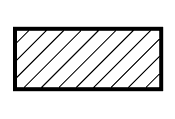
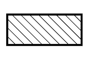

HƯỚNG DẪN SỬA CHỮA > CÁC VỊ TRÍ KÍCH VÀ ĐỠ XE |
| CÁC CHÚ Ý VỀ TÌNH TRẠNG CỦA XE KHI KÍCH |
Xe phải ở trạng thái không chất tải trước khi kích xe lên/nâng xe lên. Không bao giờ được kích hay nâng xe lên khi có bất kỳ vật nặng nào đang ở trên xe.
Nếu tháo bất kỳ một vật nặng nào đó như động cơ hay hộp số, trong tâm của xe sẽ bị dich chuyển. Để ổn định xe, hãy đặt khối lượng cân bằng ở những vị trí mà ở đó nó không lật hoặc dịch chuyển hoặc là dùng một kích khác để đỡ kích.
| CÁC CHÚ Ý KHI DÙNG CẦU NÂNG 4 TRỤ |
Tuân theo hướng dẫn sử dụng cho loại cầu nâng 4 trụ để thao tác an toàn.
Hãy dùng các biên pháp phòng ngừa để khỏi làm hỏng lốp và vành xe.
Dùng khối chèn bánh xe, cố định xe.
| CÁC CHÚ Ý KHI DÙNG KÍCH VÀ GIÁ ĐỠ CỨNG |
Thao tác trên bề mặt phẳng và luôn dùng các khối chặn.
Đặt kích và giá đỡ vào các vị trí quy định của xe một cách chính xác.
Khi kích xe lên, trước hết hãy nhả phanh tay và chuyển cần số đến vị trí N.
Khi kích toàn bộ xe lên:
Khi kích các bánh xe phía trước lên, hãy chèn vào phía sau của bánh sau.
Khi kích các bánh sau lên, trước hết hãy chèn vào phía trước của các bánh trước.
Khi chỉ kích các bánh trước hoặc bánh sau lên:
Trước khi kích các bánh trước, hãy đặt các cục chèn vào hai phía của các bánh sau.
Trước khi kích các bánh sau, hãy đặt các cục chèn vào hai phía của các bánh trước.
Khi hạ xe mà chỉ có các bánh xe phía trước hoặc bánh xe phía sau đã được kích lên:
Trước khi hạ các bánh trước, chắc chắn rằng các cục chèn phải ở phía trước của các bánh sau.
Trước khi hạ các bánh sau xuống, hãy đặt các cục chèn vào phía sau của các bánh trước.
Đặc biệt nguy hiểm khi làm việc mà xe chỉ được đỡ bởi kích, thậm chí một công việc rất nhỏ. Hãy dùng giá đỡ để đỡ xe.
 |
Phía sau: Tâm của cầu sau |
|
|  |
| - |
|  |
| - |